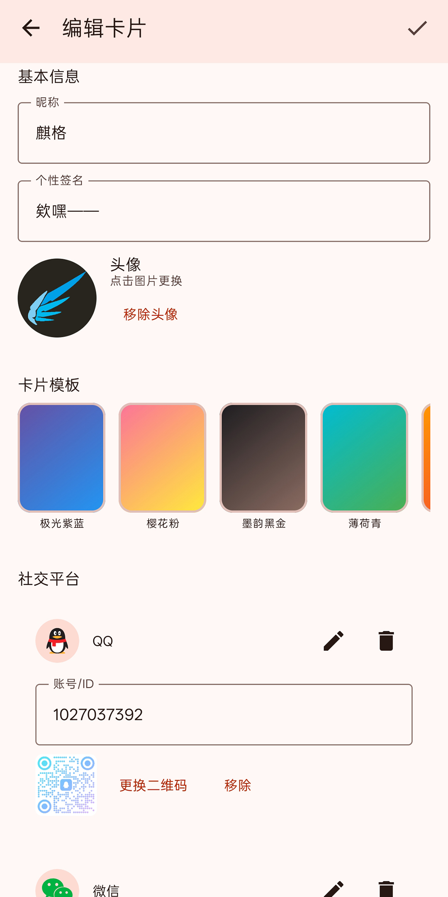
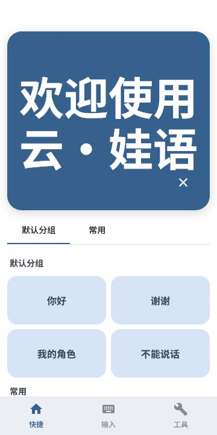

🌟 锁屏显示：点亮屏幕直接使用
在变娃状态下，指纹识别和面部解锁几乎完全失效。在嘈杂的漫展或外景现场，频繁输入密码解锁手机极其痛苦。
"无需解锁，最懂你的痛点"
请授予软件在锁屏时显示的权限，部分厂商可能需要悬浮窗或应用上层权限


送给 Kiger 的辅助沟通工具
「云·娃语」已上线！不限设备，点击即用！
新增快速拉起社交平台
📺 演示视频：看一看娃语如何改变你的沟通体验
在变娃状态下，指纹识别和面部解锁几乎完全失效。在嘈杂的漫展或外景现场，频繁输入密码解锁手机极其痛苦。
"无需解锁，最懂你的痛点"
请授予软件在锁屏时显示的权限，部分厂商可能需要悬浮窗或应用上层权限
在漫展、外景现场与同好交流时，打字和查找各个平台的个人主页往往极其繁琐。 全新扩列卡片功能，支持在应用内配置个性化专属主页，将你所有的社交账号聚合展示。
一屏配置包含 QQ、B站、微信、微博等多个社交平台账号的二维码。
支持自主上传头像，设置背景和形状，贴合角色人设，

无需联网，不依赖第三方云端，完全离线运行保护隐私。集成 Sherpa-Onnx 引擎，支持在本地导入离线语音模型，赋予你的角色独特的发音质感。
提供针对语调、语速、起伏度等多参数的细致调节，支持各种语流波动细节，还原理想的人设声音表现。
兼容主流的 VITS 模型。用户可自行放置 Onnx 文件与配置文件，无需复杂编码，即可在应用中轻松加载私人定制的特制声线。

适用于无法安装原生 Android 应用的 IOS 等用户，打开浏览器即可使用，覆盖核心沟通功能，方便快捷。
💡 将应用添加到主屏幕
点击浏览器菜单按钮，将「云·娃语」添加到桌面，断网也可用，获得类原生应用体验。

常驻后台时自动转换为静默实况通知，兼容各品牌系统的灵动岛、状态栏胶囊等设计，实现"秒回"应用。
支持用户自定义短语分组，快速切换不同场景的常用语库，满足漫展、外景、日常等多样化沟通需求。
基于 Material 3 开发，支持 Android 12+ 动态壁纸取色，美观且现代化。